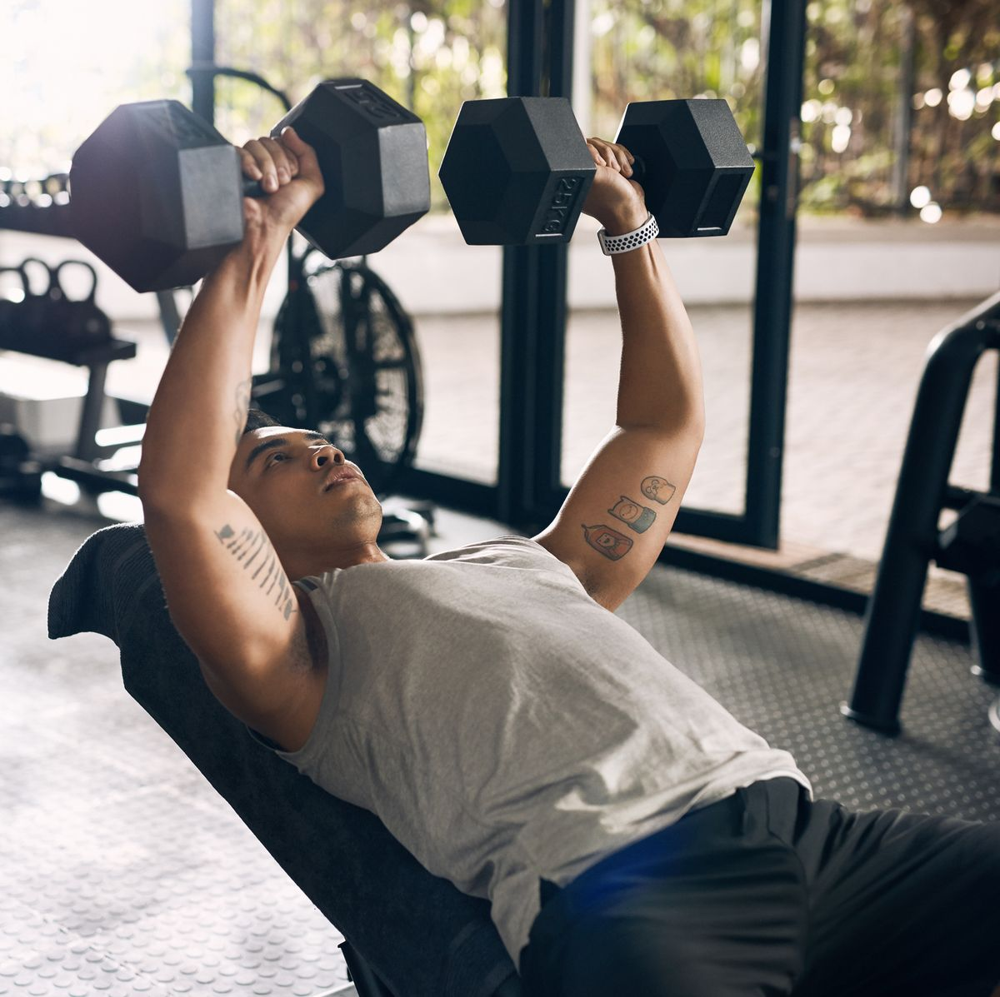
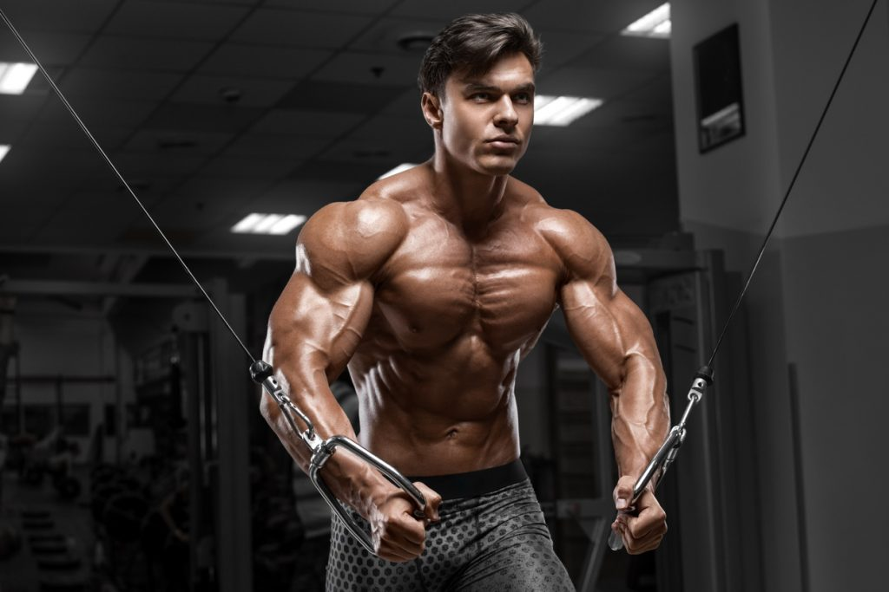
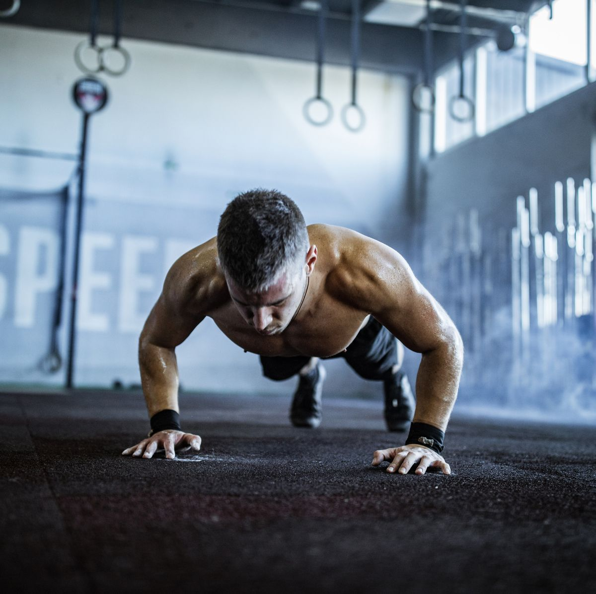

PECTORALES
Los pectorales son un grupo muscular esencial para movimientos de empuje y estabilización del hombro. Compuestos por el pectoral mayor y menor, están ubicados en el pecho y se extienden desde el esternón y las costillas hasta la parte superior del húmero. Estos músculos permiten acciones como empujar objetos hacia adelante y mantener la estabilidad de los hombros durante movimientos de los brazos.
Press Plano con Barra
El favorito de muchos y un ejercicio primordial para desarrollar los pectorales y los músculos de empuje en general. Permite levantar grandes cargas, facilitando la progresión y la sobrecarga gradual, lo que lo convierte en uno de los mejores ejercicios para ganar fuerza. Si bien al ser un ejercicio compuesto hace que la hipertrofia se distribuya entre varios músculos, no debe ser pasado por alto para desarrollar más fuerte y levantar más peso en los otros ejercicios para pectoral.

Press Inclinado con Mancuernas
El press inclinado con mancuernas es uno de los mejores ejercicios para desarrollar unos pectorales fuertes, ya que aísla los músculos pectorales de manera más efectiva que el press plano. El uso de mancuernas ofrece un mayor rango de movimiento y permite aplicar la funcion de "contraer" del musculo en cuestion su hipertrofia, aunque esto limita un poco la sobrecarga. Si bien este ejercicio aísla los músculos pectorales de manera más efectiva que el press plano, no significa que este último deba o pueda ser reemplazado directamente ya que ambos ejercicios se complementan perfectamente para lograr un desarrollo equilibrado de fuerza e hipertrofia en los pectorales.
Aperturas
El estimulo a los músculo pectoral que ofrecen las aperturas es clave para un buen desarrollo, ya que al efectuar este ejercicio, tanto en la fase concéntrica (acercamiento de los brazos) como en la fase excéntrica (alejamiento de los brazos) se realiza una función del músculo clave la cual no es muy efectuada en los ejercicios anteriores(sobre todo en el press plano con barra). Recomiendo realizar en máquina o con polea, preferiblemente en polea ya que permite trabajar el pectoral desde diferentes angulos y asi estimular todas las parte del pectoral.
Flexiones
Uno de los principales ejercicios en la calistenia y una excelente forma de trabajar los pectorales, así como los músculos de empuje en general, como los deltoides y los tríceps. Son un ejercicio versátil que se puede realizar en cualquier lugar y sin necesidad de equipamiento previo. Además, tienen una amplia gama de variaciones que permiten enfocarse en diferentes grupos musculares o aumentar la dificultad.
